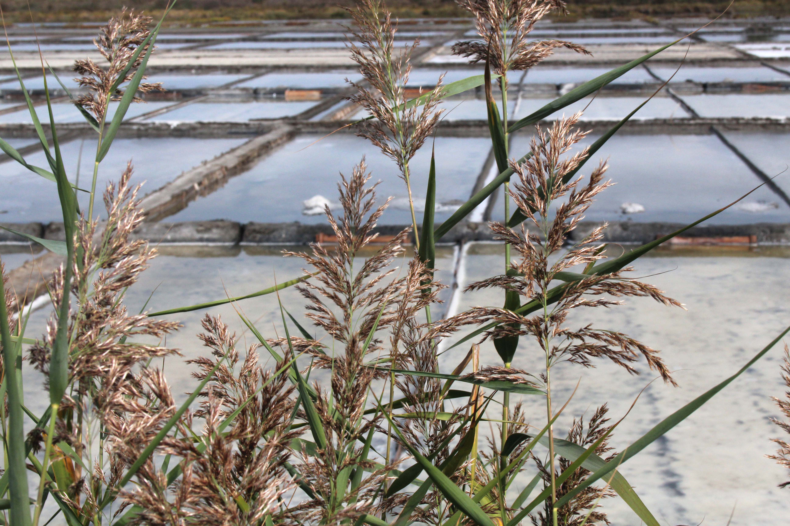
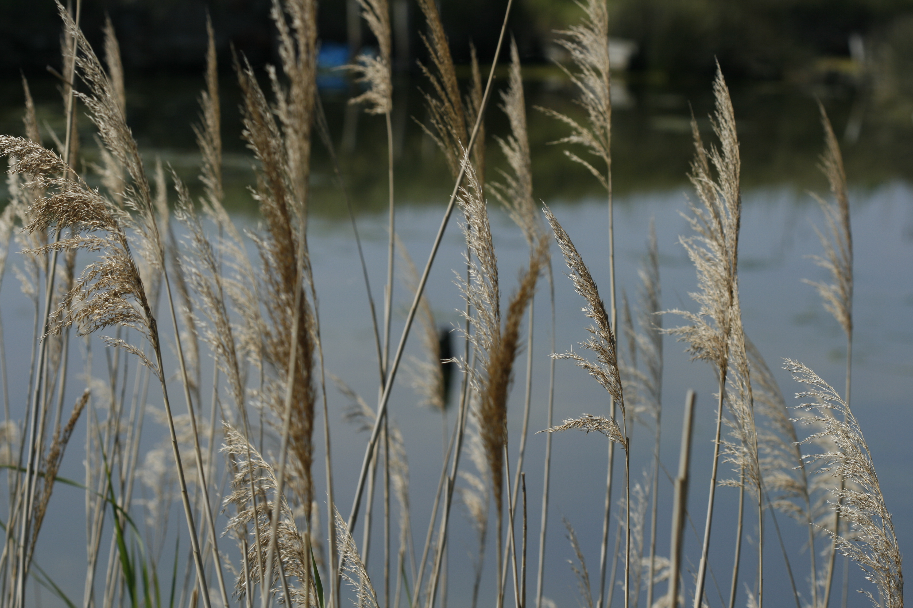
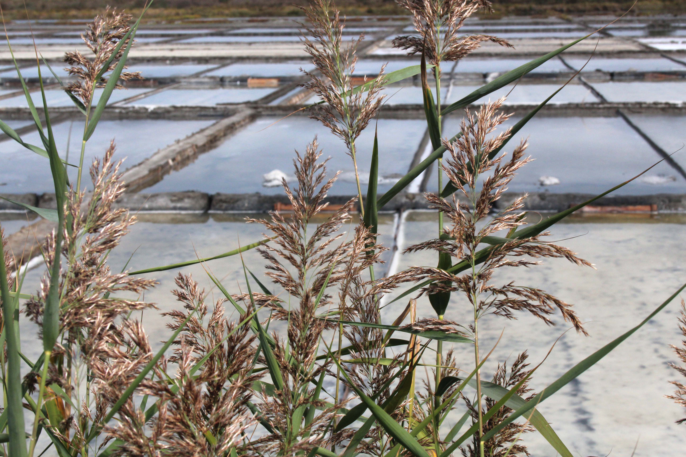
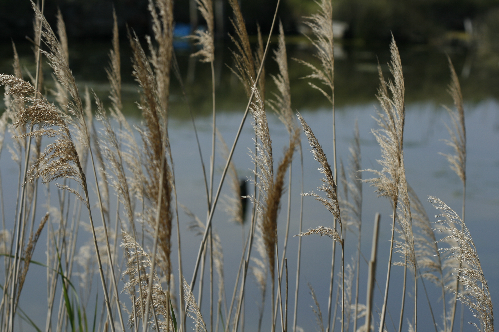
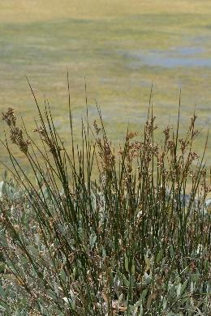
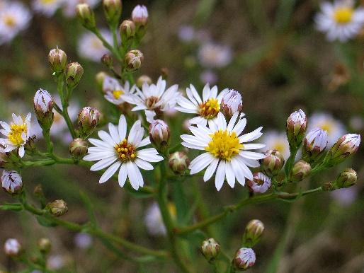
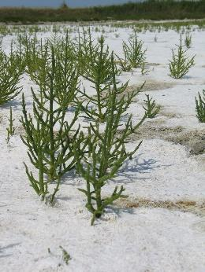
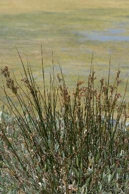
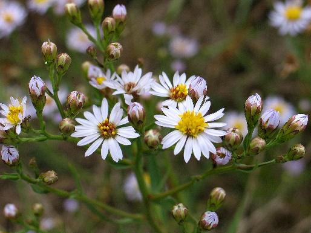
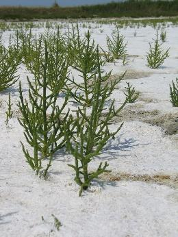

As salinas litorais, enquanto habitats artificiais, não estão diretamente sujeitas à influência das marés, apresentando uma notável diversidade de espécies de aves ao longo de todo o ano. A preferência das aves pelas salinas de Aveiro pode ser atribuída a diversos fatores, destacando-se a sua localização costeira, a ausência de invernos rigorosos, a disponibilidade de água ao longo de todo o ano e um forte gradiente de salinidade, onde os cristalizadores possuem um nível de salinidade superior aos viveiros.
Os sapais e prados marinhos são habitats essenciais nos estuários, destacando-se na Ria de Aveiro. Os prados marinhos, predominantemente ocupados pelo sirgo (zostera noltei), estendem-se por zonas intertidais e áreas mais profundas. Nas regiões marginais, em solos lodosos e arenosos, surgem os sapais, ricos em plantas tolerantes ao sal. Reconhecido como uma das zonas mais produtivas da biosfera, o sapal beneficia da chegada natural de nutrientes pelo movimento das marés, sedimentação e decomposição de organismos (Biorede)
A Marinha de Santiago da Fonte destaca-se como a única das cinco salinas pertencentes à Universidade de Aveiro que foi alvo de um processo de recuperação bem-sucedido. É, igualmente, uma das nove salinas existentes na Ria de Aveiro que continua a produzir sal utilizando métodos exclusivamente artesanais, conforme dados de 2016. A gestão deste espaço, onde os marnotos (salineiros) desempenham um papel fundamental, foi formalizada através de um contrato de arrendamento, sendo a responsabilidade pela venda do produto atribuída a estes trabalhadores.
A atividade típica de extração de sal artesanalmente é património cultural, pois o conhecimento foi transmitido de pais para filhos durante muitas gerações. Além disso, a produção de sal e o, também associado, comércio naval são considerados património histórico por serem atividades económicas desde 959, como comprova o testamento da Condessa Mumadona Dias ao Cenóbio (mosteiro) de Guimarães. Este testamento refere a cidade de Aveiro com outro nome, o mais antigo topónimo - Alavario et Salinas, que revela a importância do valioso sal. A beleza paisagística inconfundível desta valiosa zona húmida é reconhecida pelos diversos estatutos de proteção da natureza atribuídos (ex: ZPE e SIC), salientando a necessidade de valorizar, conservar e promover de forma sustentável o vasto património natural que é a Ria de Aveiro (incluindo as salinas) (Câmara Municipal de Aveiro).
 




 




